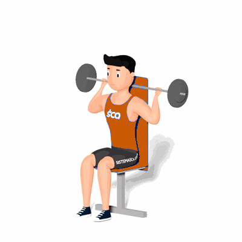

Desenvolvimento Nuca com Barra

O exercício da uma ênfase maior ao deltoide medial e posterior. Indicado a praticante de musculação nível avançado.
Ficha Técnica
Tipo: Musculação
Grupo Muscular: Ombro
Aparelho: Nenhum
Músculos: Nenhum
Como realizar
- Sente-se num banco plano;
- Agarre uma barra, com um agarre em pronação ligeiramente mais afastado que a largura dos ombros;
- Posicione a barra atrás do pescoço;
- Empurre a barra para cima até que os braços fiquem estendidos em cima;
- Baixe a barra até que esta fique atrás do pescoço, ligeiramente abaixo do nível das orelhas;
- Repita os movimentos.
 RC STORE
RC STORE